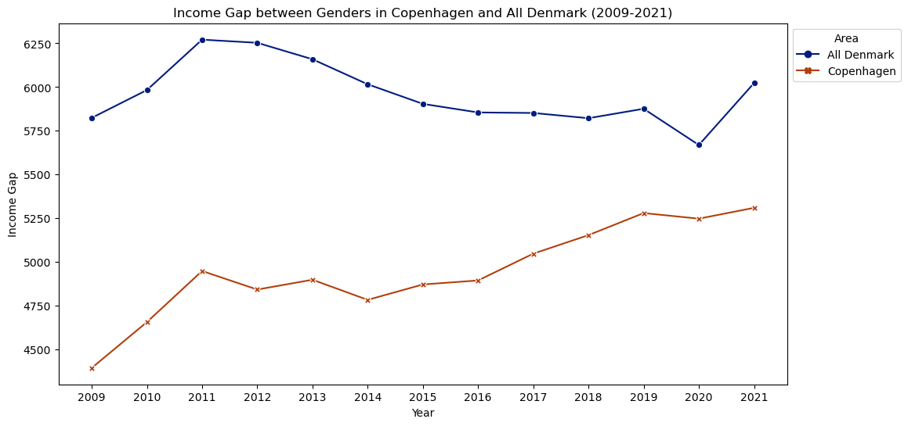

Featured Project
Gender Disparities in Denmark
An in-depth data analysis exploring gender gaps in income, parental leave, and education across Copenhagen and Denmark — featuring interactive maps, time-series charts, and geographic visualisations built with Plotly.
- Python
- Pandas
- Plotly
- GitHub Pages